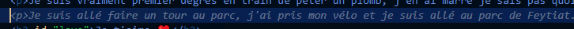

Coucouu mon amour alors là il est 3h du matin, juste pour te dire que je vais aller me coucher mais je venais de faire le site que tu regardes là. Hehe j'suis trop fier de ce que j'ai fais c'est tout kiki, comme toi ❤️
Coucouuu ça va mon amour ? ❤️ J'ai bien dormi perso, je me suis levé à midi mais j'avais fais un rêve trop bizarre je me souviens pas de tout, mais je sais qu'à un moment mon frère fouille ce site là. Et à la fin je vais dans le garage de mes grands parents pour prendre une bouteille de Pepsi sauf qu'elle est chaude de fou vu qu'elle est restée au soleil, du coup je la mets au congélateur pour la refroidir un peu. Mais je remarque que depuis le début j'avais les yeux fermés et flous, tu sais comme quand tu viens de te réveiller. Du coup je cours en montant à l'étage pour me débarbouiller le visage. Et là je monte et c'est l'étage de ma maison à Feytiat, et en fait je cours parce qu'il y a quelqu'un derière moi qui veut me tuer, je sais pas qui c'est. J'arrive dans la salle de bain et je cherche un gant, j'en trouve pas du coup je fais ça avec une serviette et là le mec qui veut me tuer s'approche et me rend la bouteille de pepsi. Wesh.. Et là je me réveille... Bizarre. Bon après j'ai fais un Fifa pendant que mon père faisait à manger - c'est à dire des frites - et après ça j'ai mangé le burger en trop d'hier. On a regardé le Hot Ones avec Alain Chabat c'est trop bien. Et là il est 14h33 je sais pas ce que je vais faire, je vais surement brancher mon volant pour jouer à un jeu, pourquoi pas à BeamNG Drive. Bref je te laisse mon amour. Bisouuus
Je suis vraiment premier degrès en train de péter un plomb, j'en ai marre je sais pas quoi faire. J'ai littéralement fais tout ce que je pouvais faire. J'ai passé 2h sur un jeu de merde qui me plaisait pas juste parce que je savais pas quoi faire, bah j'ai vite abandonné. Et là je suis à deux doigts de casser mon écran ou de je jeter par la fenêtre, voire même de me jeter par la fenêtre. Je suis en train de devenir fou j'en peux plus. Reviens s'il te plait, je m'ennuie sans toi...
Euh j'allais t'écrire là mais je vois ça ⬇️ Il faut savoir que l'IA du logiciel de code prédis ce que je vais écrire. Bon là il essaye de prédire des truc nul mais wesh pourquoi il sait pour Feytiat. C'est mentionné nulle part ailleurs. Trop bizarre

MDRRR Et là il m'a prédis la ligne pour mettre l'image en mettant le titre "IA qui prédit Feytiat" j'vais cabler
Bon du coup je voulais te dire. Là il est 3h du mat oui je triche on est vendredi techniquement mdrr. Je m'ennuyais trop à jouer à GT4 que du coup j'ai fais du casque et pour la vanne j'ai testé les jeux 18+. Mdrr comment c'est claqué au sol c'est juste pas pratique en fait je vois pas comment tu peux faire l'asmr en vrai en jouant à ça t'as constament les mains prises. Bref. Après ça je suis allé faire le gouter et je me suis dis que j'allais live à 20h J'ai rejoins Julien et Enzo en vocal. Enzo est parti quand j'ai lancé le live parce qu'il devait manger. Pas grave. J'ai d'abord fais du bedwars comme à l'ancienne mais mon ordi buggait trop c'est une dinguerie du coup j'ai changé pour Arcade Paradise (j'avais déjà commencé le jeu en live) Après ça Julien m'a rappelé l'existance du jeu The Exit 8 en fait ça fait un an je pense que je veux faire une vidéo dessus mais que j'y pensse pas. Du coup j'ai fais un live dessus et le concept est trop bien, y aura un montage sur ma chaine de ce gameplay. Ensuite j'ai coupé le live il était 23h30 mdrr et avec julien on a trainé sur les activités discord on a trouvé un Uno trop bien et on a joué au golf après. J'ai dis que je voulais dormir et il a lancé le tableau blanc commun mdrr. Evidemment on a fait des ref à 39-45 tu connais mdrr et après je t'écris et je vais dodo.
Tu me manques trop vraiment. Aujourd'hui j'ai pas répondu à tes messages Insta et tu vas peut être trouver ça bizarre et me prendre pour un fou mais hier j'ai eu peur. Hier t'as envoyé des emojis que t'envoies jamais mais genre vraiment jamais. Ils faisaient quoi dans les récents alors ? Surtout celui qui regarde à travers ses yeux là. Tu l'envoie jamais et tu l'as envoyé à quelqu'un, je vois pas à qui ça peut être à part un amant, en mode "chut ça reste entre nous on lui dis pas"... Désolé je continue avec ça tu sais que c'est mon pire cauchemar.. Et en vrai j'ai aucune raison de pas te répondre. Je me doute trop de ce genre de choses. Mais comprends moi t'es loin si jamais tu en aurais l'envie tu aurais pu me tromper à cette distance je n'en saurai rien.. J'ai un peu déprimé aujourd'hui à cause de ça et je sais très bien que te le dire là par message n'arrangera rien parce que tu vas répéter comme d'habitude que tu n'oserai jamais faire ça. Bref désolé j'ai écris tout ça pour rien je vais effacer je pense.
Demain je vais chez le coiffeur à 11h fini les cheveux longs en plus après je vais acheter pleins de fringues je vais vraiment changer premier degrés ça va être cool. J'espère. En vrai j'aurai préféré faire ça avec toi, les boutiques et tout.. Bref je te laisse je vais dormir bonne nuit bisous ❤️